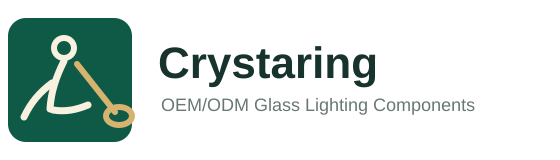

Logo Drafts
Crystaring logo options
Four directions using the website colour system. Option 1 stays closest to the original mark; Option 2 makes the glassblowing action clearest.
Option 1 - Original Recolour
Closest to the old logo shape, updated to the website green and warm gold.
Option 2 - Clear Glassblower
More readable human figure, blowpipe and molten glass shape. Best balance for B2B website use.
Option 3 - Round Seal
More premium and badge-like, suitable for catalogue covers and packaging marks.

Option 4 - Horizontal Wordmark
Website header version combining icon, company name and positioning line.